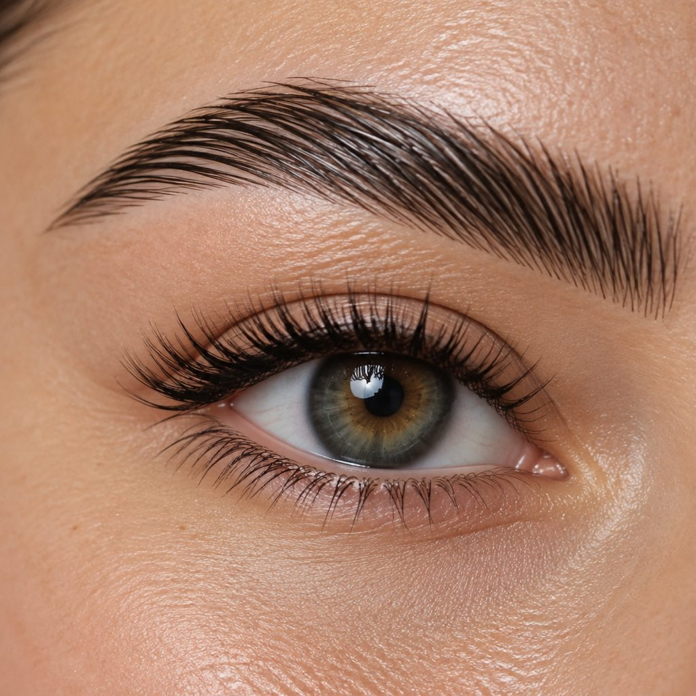
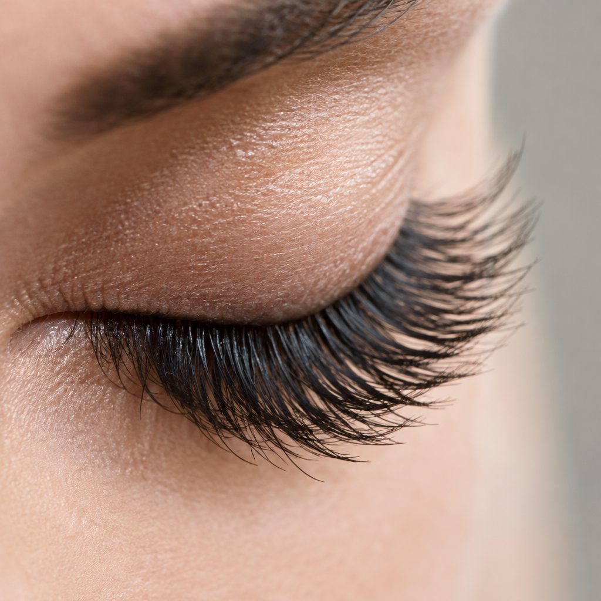
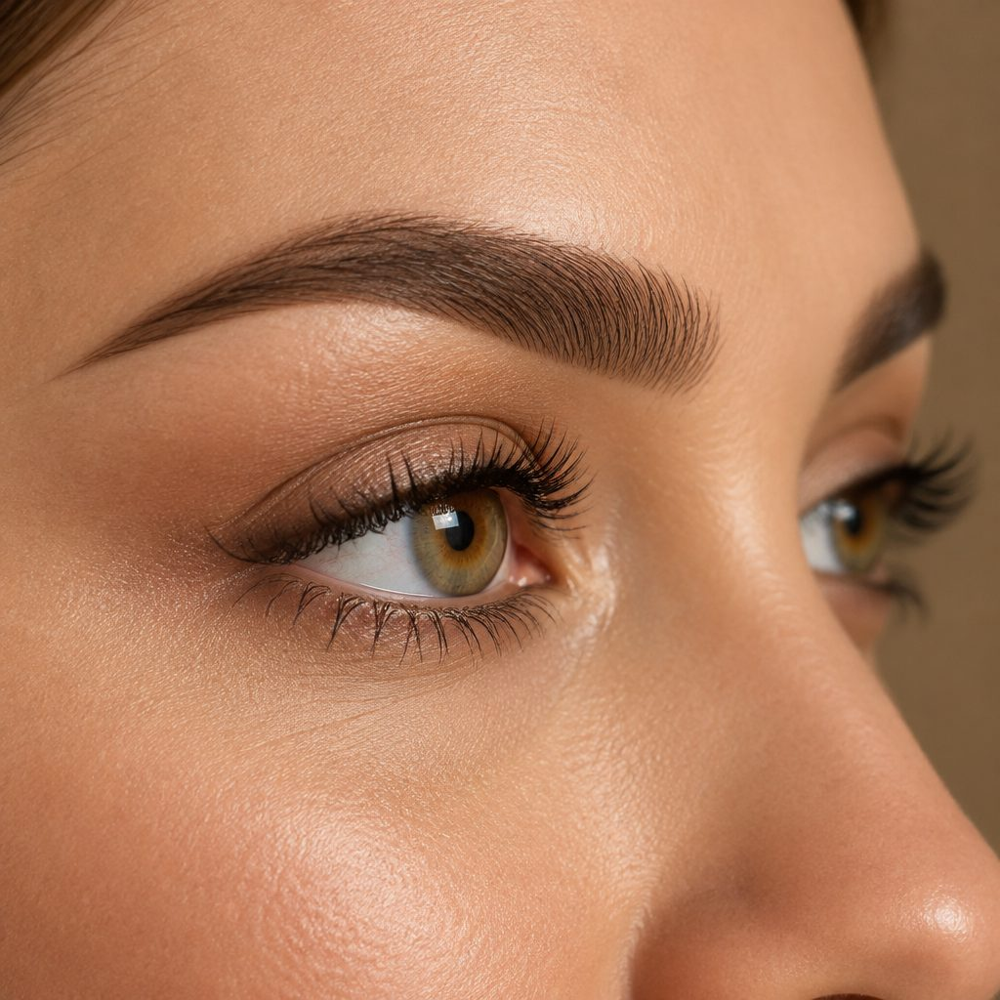
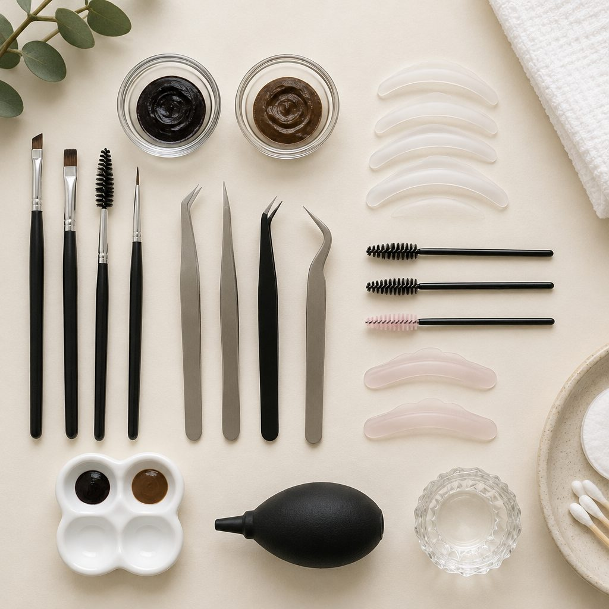

01
Волоски растут в разные стороны
Ламинирование укладывает их в форму и фиксирует: бровь выглядит гуще и держится без геля и лака.
Ламинирование и окрашивание бровей и ресниц. Волоски укладываются в форму, цвет держится обычно 4–6 недель, а утром хватает расчёски. Работаю одна, состав подбираю под вашу кожу и волос.

Почти всегда дело не в косметике, а в том, что волос не лежит в нужную сторону и не окрашен у корня. Это решается за один визит.
Ламинирование укладывает их в форму и фиксирует: бровь выглядит гуще и держится без геля и лака.
Коррекция плюс окрашивание дают визуальную плотность. Не рисую «две палочки» и не делаю шире, чем нужно лицу.
Подбираю состав и выдержку под ваш волос: цвет уходит постепенно и в свой тон, без рыжины и зелени.
Ламинирование поднимает их от корня: взгляд открывается, утром тушь можно не трогать.
После окрашивания ресницы тёмные и раздельные. Краситься каждый день просто не нужно.
Составы без резкого запаха, тест на реакцию, аккуратная выдержка. Если кожа реагирует, процедуру не делаю.
Брови и ресницы — разная работа. Ниже то, что можно сделать за один визит, а что лучше не смешивать в один день.



Нужны модели для отработки и пополнения портфолио. Напишите в WhatsApp: расскажу, что нужно от вас, сколько это по времени и на каких условиях — без сюрпризов на месте.
Записываетесь напрямую ко мне и процедуру делаю я же. Никакой передачи «смене».
Состав и выдержку подбираю под структуру волоса и кожу, а не «как в инструкции у всех».
Если процедура вам не нужна или будет во вред — скажу и не возьму деньги.
Центральная 78, рядом с остановками. Кабинет закрытый, вы не сидите в общем зале.
Пишете в WhatsApp или звоните. Уточняю, что беспокоит, и подбираю время.
На месте смотрю брови и ресницы, обсуждаем форму и цвет. Тест на реакцию при необходимости.
Ламинирование или окрашивание. Глаза закрыты, всё по шагам — от 40 минут.
Показываю, что делать первые сутки и чем пользоваться, чтобы форма дожила до конца срока.



Напишите в WhatsApp или позвоните: подберём время, скажу, сколько займёт процедура и что взять с собой (ничего). Кабинет в Пинске, Центральная 78.